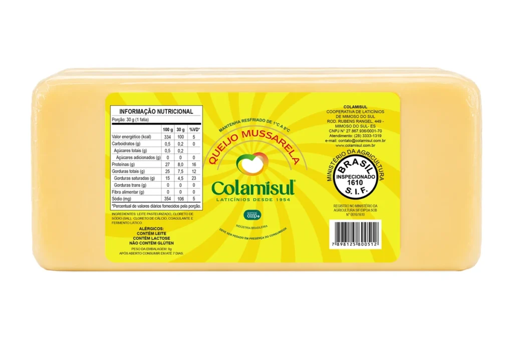

Queijos
Queijo Mussarela 2.800kg
Cooperação em cada fatia.
Nossos queijos são produzidos com leite fresco, seguindo receitas tradicionais que garantem sabor e derretimento ideais. Perfeito para o café da manhã, sanduíches quentes ou para gratinar receitas especiais, trazendo a qualidade que sua família merece.
Tabela nutricional
Queijo Mussarela — peça 2,800 kg
- Ingredientes
- Creme de leite pasteurizado e cloreto de sódio.
- Embalagem
- Peça com aprox. 2,800 kg · Caixa com 04 unidades · Porção: 30 g (1 fatia) · Porções por peça: 93
| Descrição | 100 g | 30 g | %VD* |
|---|---|---|---|
| Valor energético (kcal) | 334 | 100 | 5 |
| Carboidratos (g) | 0,5 | 0,2 | 0 |
| Açúcares totais (g) | 0,5 | 0,2 | — |
| Açúcares adicionados (g) | 0 | 0 | 0 |
| Proteínas (g) | 27 | 8 | 16 |
| Gorduras totais (g) | 25 | 7,5 | 12 |
| Gorduras saturadas (g) | 15 | 4,5 | 23 |
| Gorduras trans (g) | 0 | 0 | 0 |
| Fibra alimentar (g) | 0 | 0 | 0 |
| Sódio (mg) | 354 | 106 | 5 |
*Percentual de valores diários fornecidos pela porção.
OBS: Deve ser pesado na presença do consumidor.